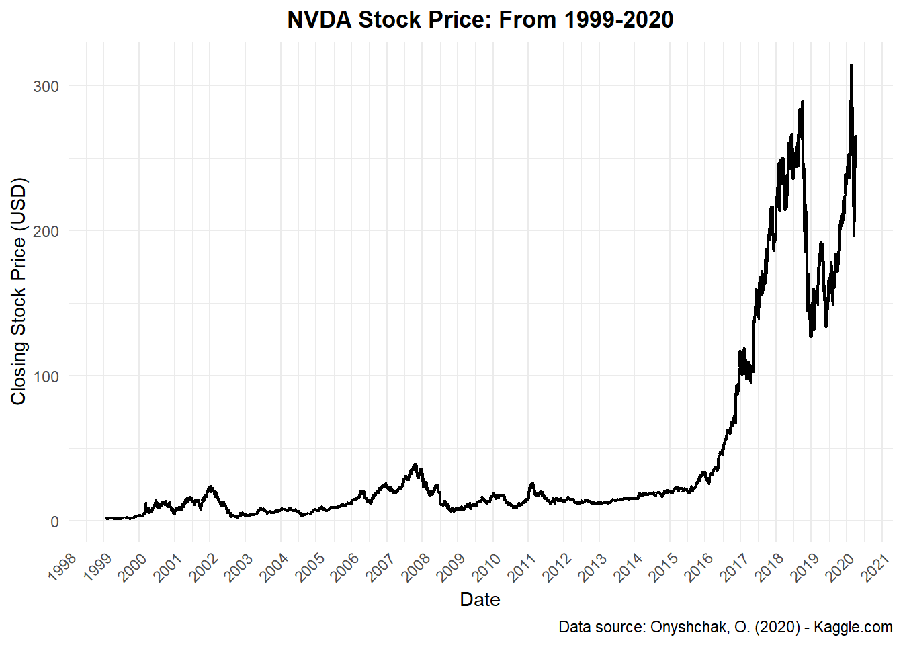
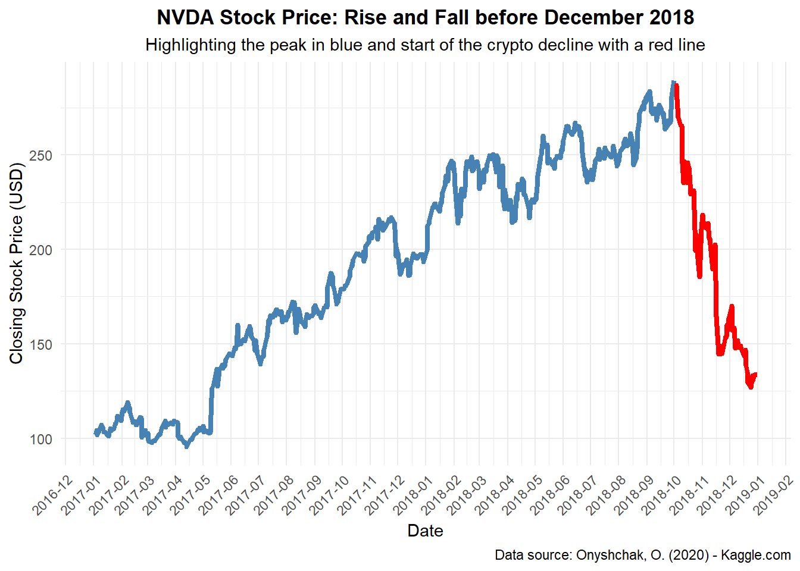

Final Project: Historic Price Drops in Nvidia Stock Price
Author
Robert Walsh
Published
November 12, 2025
The stock market’s history is punctuated by speculative bubbles, like the dot-com crash of 2000 and the 2008 financial crisis, where market irrationality led to valuations becoming detached from fundamental worth; similarly, today, the dramatic rise of Nvidia’s (NVDA) stock, driven by its AI chip dominance, accounts for a large percentage of major stock market indexes, and has fueled market anxiety by drawing parallels to these past events. While Nvidia has navigated significant drops before, such as declines in 2018 due to the crypto market crash and in 2020 during the COVID-19 pandemic, its current elevated valuation leaves it vulnerable to a correction that could be difficult to recover from. I hypothesize that a substantial market correction, particularly if combined with a significant reduction in long-term demand or technological challenges, could be more than a temporary setback, potentially eroding investor confidence and prompting a lasting re-evaluation of Nvidia’s market position and value.
For this visual analytics project I will be using data from the ‘Stock Market Data Set’ on Kaggle.com by Onyshchak (2020). Here is the code I used to import the data set into Rstudio and create a data frame. I also included a summary of the variables to show the dimensions and a sample of the first 10 records in the data set.
# Read data-set into Rstudio and create data framemyDF<-read.csv("NVDA.csv")# Clean data setmyDF<-na.omit(myDF)attributes(myDF)$na.action <-NULLmyDF$Date<-as.Date(myDF$Date, format ="%Y-%m-%d")# Print str, summary, and first 10 recordsstr(myDF)
'data.frame': 5333 obs. of 7 variables:
$ Date : Date, format: "1999-01-22" "1999-01-25" ...
$ Open : num 1.75 1.77 1.83 1.68 1.67 ...
$ High : num 1.95 1.83 1.87 1.72 1.68 ...
$ Low : num 1.55 1.64 1.65 1.58 1.65 ...
$ Close : num 1.64 1.81 1.67 1.67 1.66 ...
$ Adj.Close: num 1.51 1.67 1.54 1.53 1.53 ...
$ Volume : num 67867200 12762000 8580000 6109200 5688000 ...
summary(myDF)
Date Open High Low
Min. :1999-01-22 Min. : 1.396 Min. : 1.422 Min. : 1.333
1st Qu.:2004-05-12 1st Qu.: 9.390 1st Qu.: 9.667 1st Qu.: 9.150
Median :2009-08-27 Median : 14.870 Median : 15.130 Median : 14.633
Mean :2009-08-27 Mean : 42.567 Mean : 43.286 Mean : 41.818
3rd Qu.:2014-12-12 3rd Qu.: 24.327 3rd Qu.: 24.740 3rd Qu.: 23.790
Max. :2020-04-01 Max. :312.770 Max. :316.320 Max. :301.490
Close Adj.Close Volume
Min. : 1.365 Min. : 1.256 Min. : 492000
1st Qu.: 9.423 1st Qu.: 8.673 1st Qu.: 8749800
Median : 14.910 Median : 13.793 Median : 13308400
Mean : 42.573 Mean : 41.626 Mean : 15905810
3rd Qu.: 24.310 3rd Qu.: 22.632 3rd Qu.: 19625200
Max. :314.700 Max. :314.512 Max. :230771400
First and foremost, it is troubling that a single company can account for such a large share of a primary stock market index. The S&P 500 is a market-capitalization-weighted index, meaning each company’s weight in the index is proportional to its market capitalization. Driven by demand for its high-powered AI chips, Nvidia’s valuation has surged, making it the world’s most valuable company by market capitalization and giving it the highest weight in the S&P 500. According to recent data, Nvidia accounts for approximately 7.7% to 8% of the S&P 500 index. (Isbitts, 2025) The following pie chart uses a part-to-whole visualization strategy. Few (2009) suggests that “information visualizations should cause what’s potentially meaningful to stand out” (p. 33), and in this case, the slice of the pie chart representing NVDA stock is crucial because it shows a single company’s weight relative to the other 499 in the index.
A stacked bar chart gives us another ‘multivariate’ look at the part-to-whole relationship, which, according to Yau (2011) “Across two variables, it is a little more difficult, but it’s still doable.” (p. 228) My chart generally aligned with good data visualization practices—particularly in clarity and the effective use of categorical and quantitative variables. However, some fine-tuning was necessary to meet the principles of intuitive design and visual hierarchy, which made the process both insightful and a valuable learning experience.
Now for the terrifying part, at least if you have any money invested in a 401K or any other investment product that consistently buys stock market assets on a consistent schedule with your hard-earned cash as a long-term investment strategy. These investments carry inherent risks, and investors could lose a significant portion of their money in a market downturn or crash. Take, for example, the dot-com bubble and market crash in 2000. “Fueled by a fervor for Internet-based companies, equity markets experienced exponential growth, highlighted by the Nasdaq index skyrocketing from under 1,000 in 1995 to more than 5,000 by 2000.” (Hayes, 2025) During this historic event, NVDA’s stock price peaked in March 2000 and fell to about half its peak by June 2000. If an investor had their money invested in either the NASDAQ index or NVDA stock, they would have lost about half of their investment. According to Hayes (2025), “The Nasdaq plummeted dramatically from a peak of 5,048 on March 10, 2000, to 1,139.90 by Oct. 4, 2002, a staggering decline of 76.81%,” and many tech stocks lost value or went bankrupt. It took many years for the stock market to recover, and fortunately, it eventually did; however, the people who could not afford to wait it out would have sold their investments at a loss.
This chart displays Nvidia’s stock price during the dot-com crash, using data from the ‘Stock Market Data Set’ on Kaggle.com by Onyshchak (2020). It features a Basic Visual Technique for analytics using color: a diverging palette with two contrasting hues and a neutral midpoint for data around a critical value, which in this case is the peak stock price in 2000. Few (2009) mentions that “when we want to use different expressions of a pre-attentive attribute, such as hue, to separate objects into different groups, we should select expressions of that attribute that vary significantly from one another” (p. 48). Therefore, rising prices are blue and declining prices are red:
This chart is frightening indeed and may bring back bad memories for people who lost money in their investments at this time; however, it does not tell the whole story. The visualization above uses a technique called ‘filtering’, which Few (2009) describes as “the act of reducing the data that we’re viewing to a subset of what’s currently there.” (p. 64) To view the complete time series chart for all of the records in the data set, we need to zoom out. Now we can see that the dot-com crash in 2000 does not seem like such a big deal because after a few years, the stock price recovered all of its losses and even continued to increase in price over the years to come:

The chart above shows that not only did the NVDA stock price recover from the dot-com bubble/crash in 2000, but if an investor held on to their investment and rode out the price variance fluctuations, they would have made a significant profit on their investment by the year 2007 and even more if they held on until 2018.
To highlight another significant decline in NVDA’s stock price, we will once again filter the data to show the market crash in 2008, driven by the financial crisis. Singh (2024) mentions that the “2008 financial crisis was an epic financial and economic collapse that cost many ordinary people their jobs, their life savings, their homes, or all three.” Zooming back in at this point, we can once again get a sense of how the NVDA investors felt about their investment at the time.

How about one more chart to highlight the pain felt by NVDA investors in December 2018, due to the cryptocurrency market crash, which hurt GPU demand, and U.S.-China trade tensions. McKenna (2019) states that “In one year, NVIDIA (NVDA) stock went from being belle of the stock market ball to something akin to an evil witch casting spells on investors’ portfolios. After returning 227% and 82% in 2016 and 2017, respectively, shares of the graphics processing unit (GPU) specialist declined 30.8% (including dividends) in 2018.” This is the resulting chart generated by filtering the records in the data set to reflect this time interval:
The Onyshchak (2020) ‘Stock Market Data Set’ gives us a preview of the NVDA stock crash in March 2020 during the broader market crash at the onset of the COVID-19 pandemic, however, the dataset ends with the last record on 2020-04-01 and the pattern of a decline with rapid recovery continues into the current present time, 2025, which leads to the main conclusive visualization that will be used to support the hypothesis that a substantial market correction, particularly if combined with a significant reduction in long-term demand or technological challenges, could prove to be more than a temporary setback, potentially eroding investor confidence and causing a lasting re-evaluation of Nvidia’s market position and value.
Here is some related work; a visualization or example of visual analytics from YahooFinance.com that inspired me:
Source: Schafer (2025)
To compliment this excellent example of visual analytics from YahooFinance.com, Schafer (2025) states that “There’s perhaps no clearer way to see how Nvidia ran away from the competition in the AI boom than looking at the company’s market capitalization against its peers” and it clearly shows just how much the company’s market cap has outperformed the S&P 500 (SPX) index as well as a couple of other mega-cap stocks.
The main problem lies in the weighted percentage of the stock market that NVDA accounts for, as discussed above, combined with the extent to which NVDA’s stock price has increased relative to the broader S&P 500 index. A good market crash and sell-off in the S&P 500 and NASDAQ 100 would likely trigger a massive sell-off in NVDA stock. The following chart shows just how far the NVDA stock price has skyrocketed in 2025, and the potential downside in a market crash or sell-off. The chart does not adjust the stock price for the “10-for-1 forward stock split. The shares began trading on a split-adjusted basis at market open on June 10, 2024.” (Capoot, 2024) Therefore, the current stock price of one share of NVDA is trading at “$ 191.84 on November 12th, 2025” (SlickCharts.com, 2025)
We would now need to multiply that price by ten to keep the scale of this analysis accurate, placing the 2025 NVDA price target at approximately $1918.40 per share.
The visualization now uses a blue-dashed regression line to show how far the current 2025 target NVDA stock price has deviated from the mean. The graph also clearly illustrates the alarming pattern of how far the price could fall if the stock market experiences another historical crash, in which stock prices return to average levels, which may very well indicate that stocks are overpriced in the current market environment. This analysis helps with the forecasting aspect of time series visualizations, once again to support the hypothesis that a substantial market correction, particularly if combined with a significant reduction in long-term demand or technological challenges, could prove to be more than a temporary setback, potentially eroding investor confidence and causing a lasting re-evaluation of Nvidia’s market position and value.
References:
Capoot, A. (2024). Nvidia announces 10-for-1 stock split after AI-driven boom in share price. CNBC. Retrieved November 12, 2025, from https://www.cnbc.com/2024/05/22/nvidia-announces-10-for-1-stock-split.html
Few, S. (2009). Now you see it: simple visualization techniques for quantitative analysis. Analytics Press.
Hayes, A. (2025). Understanding the Dotcom Bubble: Causes, Impact, and Lessons. Investopedia. Retrieved November 12, 2025, from https://www.investopedia.com/terms/d/dotcom-bubble.asp
Isbitts, R. (2025). Nvidia Stock at 8% of the S&P 500 Index Is a Big Problem for Investors. Let’s Do the Math. Yahoo Finance. Retrieved November 12, 2025, from https://finance.yahoo.com/news/nvidia-stock-8-p-500-144222897.html?guccounter=1&guce_referrer=aHR0cHM6Ly93d3cuZ29vZ2xlLmNvbS8&guce_referrer_sig=AQAAAGAeVMpI1Uv_j-RSefa75j0HuiqintWQW1yuzFH1c1732wGVhHwYuY889a_YXpBHRKDacmydvGmEwztfIunh-EG0JeN5ibAZZocA4RvrwsUkaMhnQccmwxRE0qLvjw18z8Q7KMrN4OJrhohtzOKMbMYEi8cu68TspyM34hRgOMHt
McKenna, B. (2019). Why NVIDIA Stock Plunged 31% in 2018. Motley Fool. Retrieved November 12, 2025, from https://www.fool.com/investing/2019/01/14/why-nvidia-stock-plunged-31-in-2018.aspx
Onyshchak, O. (2020). Stock Market Data Set [Data set]. Retrieved from Kaggle, 11/12/2025. https://www.kaggle.com/datasets/jacksoncrow/stock-market-dataset
Schafer, J. (2025). 6 charts that capture Nvidia’s AI-fueled rise. Yahoo Finance. Retrieved November 12, 2025, from https://finance.yahoo.com/news/6-charts-that-capture-nvidias-ai-fueled-rise-102556380.html
Singh, M. (2024). The 2008 Financial Crisis Explained. Investopedia. Retrieved November 12, 2025, from https://www.investopedia.com/articles/economics/09/financial-crisis-review.asp
SlickCharts.com (2025). S&P 500 Companies by Market Cap. SlickCharts. Retrieved November 12, 2025, from https://www.slickcharts.com/sp500
SlickCharts.com (2025). Nasdaq 100 Companies by Market Cap. SlickCharts. Retrieved November 12, 2025, from https://www.slickcharts.com/nasdaq100
Yau, N. C. (2011). Visualize this: the flowing data guide to design, visualization, and statistics (1st edition). Wiley Publishing Inc.